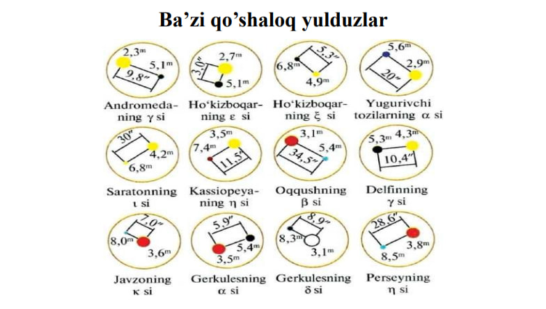
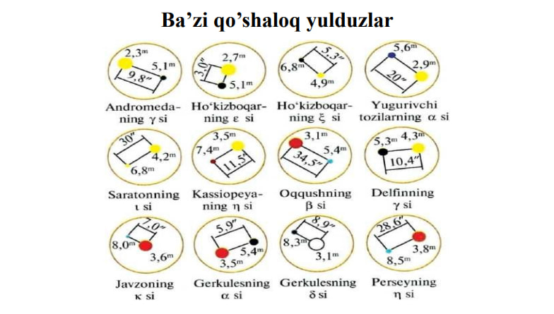

Qo'shloq yulduzlar
Osmonda yulduzlar bir-biriga yaqin yoki ustma-ust koʻrinish mumkin bularni biz qoʻshaloq yulduzlar deb ataymiz. Ular 2 turga boʻlinadi. 1. Optik qoʻshaloq yulduzlar. 2. Fizik qoʻshaloq yulduzlar. Aslida bir-biridan uzoq boʻlib bizga qoʻshaloq boʻlib ko'ringan yulduzlar optik qoʻshaloq yulduzlar deyiladi. Ikki yulduz fazoda oʻzaro tortish kuchi ta'sirida massa markazi atrofida harakatda boʻlsalar, bunday oʻzaro dinamik bog'langan sistemaga fizik qoʻshaloq yulduzlar deyiladi.


 
